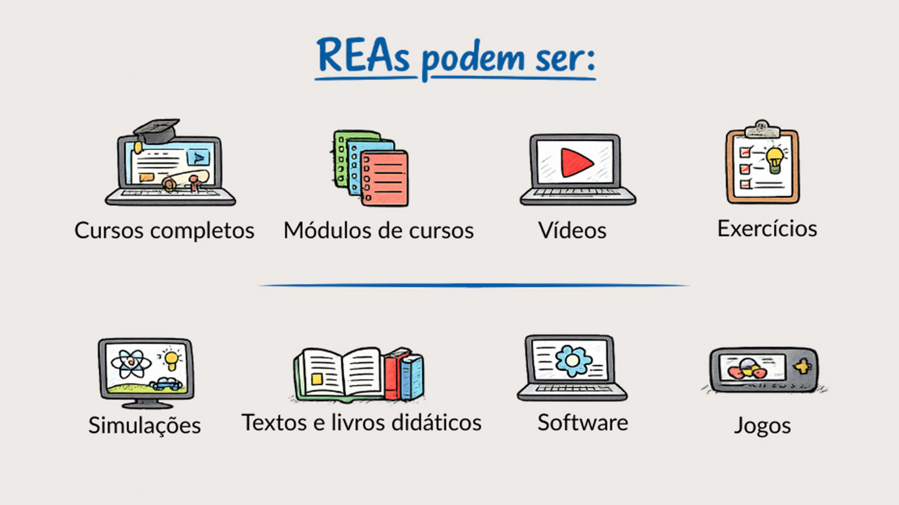
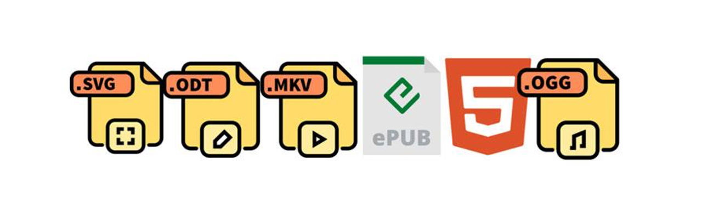
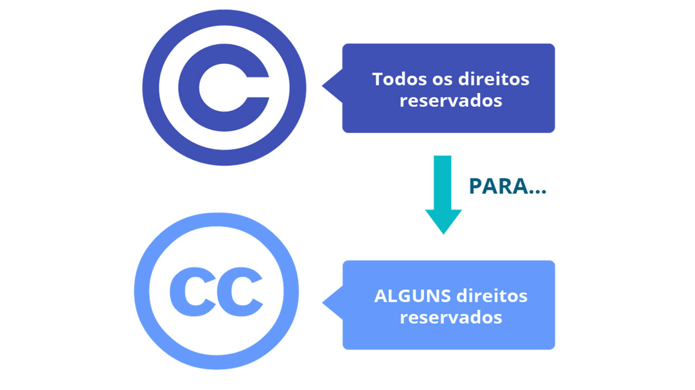
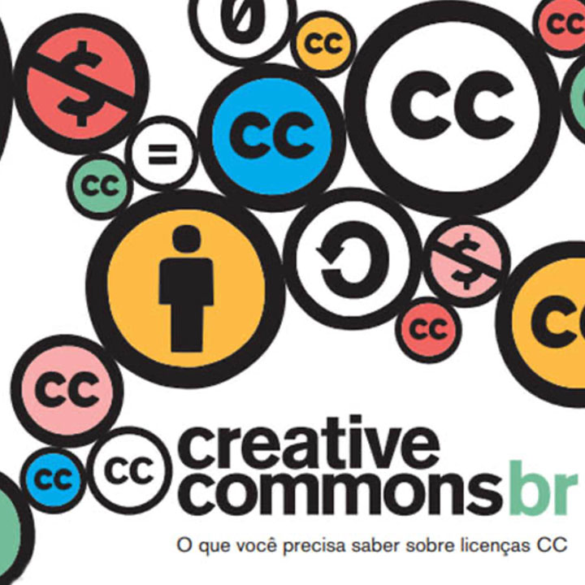
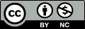

Módulo 5 . Aula 4
O que são Recursos Educacionais Abertos
Módulo 5 . Aula 4
O que são Recursos Educacionais Abertos
 Objetivos da
aula
Objetivos da
aula
Bem-vindos à quarta aula do curso! Esperamos que ao final desta aula você seja capaz de:
- Compreender o conceito de Recursos Educacionais Abertos.
- Identificar as principais características que diferenciam REA de materiais gratuitos.
- Conhecer as variações das licenças abertas.
Qualidade de Recursos Educacionais Abertos
.")
Na sociedade da informação, o uso intensivo de tecnologias digitais e de dados no cotidiano permite que estudantes acessem rapidamente diversas informações sobre temas diversos, que docentes compartilhem conteúdos sem barreiras geográficas e que materiais educacionais sejam disseminados globalmente com baixo custo.
Apesar desse cenário, os sistemas de produção, distribuição e compartilhamento de informações educacionais ainda não acompanham a velocidade dessas transformações, o que permite identificar uma desconexão estrutural que impede a promoção de processos de ensino e aprendizagem mais acessíveis, eficazes e sustentáveis. O movimento em prol da Educação Aberta emerge como uma possível resposta a esse descompasso, buscando alinhar as práticas educacionais às possibilidades do ambiente digital (Singun, 2025; Timotheou et al., 2022).
Recursos Educacionais Abertos (REA) são definidos como materiais de ensino, aprendizagem e pesquisa sem custos e sem restrições de acesso. Contam com licenças abertas que autorizam seu uso livre e com formatos técnicos abertos, facilitando customizações para diferentes contextos educacionais.
Conceitos de Recursos Educacionais Abertos
Os Recursos Educacionais Abertos (REA) são materiais de ensino, aprendizagem e pesquisa, em qualquer formato ou mídia, que se encontram em domínio público ou são disponibilizados sob licenças abertas, permitindo acesso, uso, adaptação e redistribuição por qualquer pessoa.
Para maior compreensão sobre o conceito e a importância dos Recursos Educacionais Abertos (REA) no movimento da Educação Aberta, torna-se primordial um resgate da história dos REA.
A concepção de recursos educacionais disponíveis para livre acesso e adaptações não é algo recente, remontando quase ao surgimento da própria rede. Por isso, em 2006, David Wiley descreve quatro eventos marcantes para a história dos Recursos Educacionais Abertos. São eles:
| Ano | Marco | Descrição |
|---|---|---|
| 1994 | Objeto de aprendizagem (Learning Object): termo idealizado por Wayne Hodgins. | O papel dos objetos de aprendizagem na história dos REA está ligado à difusão da ideia de que os materiais digitais podem ser projetados e produzidos de forma a serem facilmente reutilizados em diversos contextos. Juntamente com sua ênfase em reutilização, esse movimento gerou vários esforços de padrões destinados a detalhar metadados, troca de conteúdo e outros padrões necessários para que os usuários encontrem e reutilizem conteúdo educacional digital (ex.: ARIADNE, SCORM, IEEE/LOM, IMS etc.). |
| 1998 | Conteúdo Aberto (Open Content): termo definido por David Wiley. | Termo direcionado pelo autor para a área da educação, mas que se popularizou em diversas dimensões da internet. No que diz respeito aos REA, desempenhou papel fundamental para destacar que os princípios dos movimentos de Código Aberto e Software Livre podem ser aplicados à produção de conteúdo. É quando surge, então, a primeira licença aberta dedicada para conteúdo (Open Publication Content). |
| 2001 | Creative Commons: fundado por Lawrence Lessig, a iniciativa disponibiliza um conjunto de licenças flexíveis com instrumentos legais significativamente mais fortes do que as licenças abertas anteriores para conteúdo. | O papel da Creative Commons na história dos REA é o aumento da credibilidade e da confiança de suas licenças legalmente superiores, muito mais fáceis de usar, trazidas para a comunidade de conteúdo aberto. Desempenhou papel fundamental no processo de adesão ao movimento. |
| OpenCourseWare: iniciativa da MIT de publicar cursos para acesso público, gratuito e uso não comercial. | OpenCourseWare desempenhou muitos papéis na história dos REA, entre eles inclui-se o exemplo de compromisso em nível institucional, trabalhando ativamente para incentivar projetos semelhantes e reforçando a importância da adesão das instituições ao movimento. |
Em 2002, o termo “Recursos Educacionais Abertos” (REA) foi cunhado em um evento da Unesco intitulado “The Forum on the Impact of Open Courseware of Higher Education Institutions in Developing Countries”, quando discutiu-se sobre o impacto de iniciativas que potencializariam uma educação mais inclusiva, equitativa e de qualidade. Na ocasião, definiu-se REA como “oferta de recursos educacionais abertos, mediada por tecnologias de informação e comunicação, para consulta, utilização e adaptação por uma comunidade de usuários para fins não comerciais” (Unesco, 2002).
Uma década depois, em 2012, como resultado da realização do I Congresso Mundial de REA, promovido pela Unesco, a Declaração REA de Paris foi promulgada, reforçando a importância dos REA como marco importante para a Educação Aberta e definindo dez recomendações para governos e instituições implementarem políticas e práticas com o objetivo de incentivar e promover os REA.
Os debates se aprofundaram nos anos seguintes. Em 2017, no 2º Congresso Mundial de REA organizado pela Unesco e pelo governo da Eslovênia, foi lançada a Declaração de Ljubljana sobre REA. O objetivo era transformar as recomendações da Declaração de Paris de 2012 em ações concretas para integrar REA às práticas pedagógicas e políticas educacionais, visando o Objetivo de Desenvolvimento Sustentável 4 (ODS 4) da ONU: Educação de Qualidade.
Em 2019, com base nos avanços anteriores, lança-se a Recomendação da Unesco sobre REA, orientando políticas de apoio, capacitações, REA inclusivos e modelos sustentáveis. Em 2024, no 3º Congresso Mundial de REA, surge a Declaração de Dubai, que define REA como bens públicos digitais essenciais para o acesso equitativo ao conhecimento e reforça a Recomendação de 2019, com foco no uso ético da IA, nas tecnologias emergentes e na colaboração internacional.
Neste curso utilizaremos como referência a definição de Recursos Educacionais Abertos publicada pela Unesco em 2015, no documento Diretrizes para Recursos educacionais abertos (REA) no Ensino Superior, que servirá de base para nossa compreensão do tema.
Leia a seguir a definição de Recursos Educacionais Abertos publicada pela Unesco em 2015:
"Materiais de ensino, aprendizado e pesquisa em qualquer suporte ou mídia, que estão sob domínio público ou licenciados de maneira aberta, permitindo que sejam utilizados ou adaptados por terceiros. O uso de formatos técnicos abertos facilita o acesso e o reúso potencial dos recursos publicados digitalmente. Os REA podem incluir cursos completos, partes de cursos, módulos, livros didáticos, vídeos, testes, software e qualquer outra ferramenta, material ou técnica que possa apoiar o acesso ao conhecimento "
UNESCO (2015)
Como resultado dos diversos movimentos de apoio em prol da Educação Aberta, há significativa e crescente produção e disseminação de REA ao redor do mundo. Por isso, destacamos, na linha do tempo a seguir, alguns marcos importantes que você deve conhecer.
1971
Open University do Reino Unido (OU UK).
1983
Lançamento do movimento Software Livre pela GNU.
1989
Criação da World Wide Web (WWW) ou A Web por Tim Berners-Lee.
1990
Declaração Mundial de Educação para Todos, Tailândia.
1991
Lançamento da primeira versão do Linux.
1998
Código Aberto (Open Source).
1999
Primeira licença aberta dedicada para conteúdo por David Wiley (Open Publication Content).
2000
Declaração de Dakar: Educação para todos.
2001
Wikipedia, lançada por Jimmy Wales e Larry Sanger.
2002
- Recursos Educacionais Abertos – definição do termo pela Unesco.
- Declaração de Budapeste. Budapeste open access iniciative.
- Lançamento do MIT OpenCourseWare.
- Creative Commons é lançado.
- Primeira versão do MOODLE (Sistema de gestão da aprendizagem).
2003
- Declaração de Bethesda: sobre publicação científica em acesso aberto.
- Declaração de Berlim em favor do Acesso Aberto ao conhecimento
2006
- Open University lança a plataforma OpenLearn.
- Primeiro currículo de educação entre vários países usando REA: Universidade Virtual dos Pequenos Estados da Comunidade (Commonwealth).
- Lançamento da Khan Academy e educação entre vários países usando REA: Universidade Virtual dos Pequenos Estados da Comunidade (Commonwealth).
2007
- Declaração de Cidade do Cabo para Educação Aberta.
- Primeira oferta de um Curso MOOC (Massive Open Online Course).
- Criada primeira versão da ferramenta de autoria gratuita eXeLearning.
2008
- OER África.
- Lançamento do primeiro guia REA: OER Handbook.
- Início do Projeto REA.br.
- Autoria gratuita eXeLearning
2009
- Primeira dissertação de mestrado publicada como um RE.
- Criação da OER Foundation.
2010
- Práticas Educacionais Abertas (PEA).
- Criação do Instituto Educadigital.
2011
- Caderno REA para professores.
- Lançamento do Repositório Institucional da Fiocruz – ARCA.
2012
- Congresso Mundial de REA e Declaração REA de Paris.
- Lançamento do Livro REA.
- Aprovada Projeto de LEI 989/2011-SP para disponibilizar recursos educacionais na internet.
2013
Open Educational Resources University é lançada.
2014
- Política de Acesso Aberto ao Conhecimento da Fiocruz.
- Inauguração da Cátedra Unesco de Educação Aberta na Unicamp.
- Política Geral da Rede REA/OER (Campus Virtual de Saúde Pública/OPAS).
- MIRA: Mapa de Iniciativas de Recursos Abertos.
2015
Declaração de Qingdao: TIC e Educação.
2017
- Declaração de Ljubljana/Eslovênia: Congresso Mundial de REA Unesco.
- Lançamento do Guia Como Implementar uma Política de Educação Aberta – e de Recursos Educacionais Abertos (REA).
2019
2021
2024
Ao longo da linha do tempo apresentada vimos como o movimento de Educação Aberta ganhou força globalmente. Diante desse histórico, surge uma questão prática:
Quais tipos de materiais podem ser considerados Recursos Educacionais Abertos?
Os Recursos Educacionais Abertos (REA) podem incluir textos, livros didáticos, vídeos, cursos completos ou módulos, jogos educacionais, atividades interativas, simulações, softwares e bancos de imagens. Confira a imagem a seguir:

Em síntese, qualquer material utilizado para fins de ensino e aprendizagem pode ser considerado REA, desde que esteja em domínio público ou licenciado de forma aberta e em formato técnico aberto, permitindo seu uso, adaptação e compartilhamento.
Atributos de um REA
O conceito de Recursos Educacionais Abertos, publicado pela Unesco e explicitado neste curso, destaca dois níveis de abertura para garantir as liberdades preconizadas pelo movimento dos REA:
A adoção de um formato técnico aberto é a garantia da liberdade de abrir, modificar e adaptar em qualquer software.
A opção pela licença de uso aberto é o que permite maior flexibilidade legal para o uso e reúso dos REA.
David Wiley, pioneiro na defesa do compartilhamento de conteúdo educacional aberto desde o final dos anos 1990, inspirou-se nas quatro liberdades do software livre e, em 2007, propôs os 4 Rs para definir um Recurso Educacional verdadeiramente aberto: Reutilizar (Reuse), Revisar (Revise), Remixar (Remix) e Redistribuir (Redistribute). Anos depois, em 2014, Wiley ampliou esse modelo ao incluir mais uma liberdade, Retain (reter), consolidando, assim, os 5 Rs dos Recursos Educacionais Abertos (REA).
Os 5 Rs representam as permissões que caracterizam a abertura de um recurso:
pan_tool_alt CliqueToque nos botões para visualizar as informações
Leia as situações a seguir e indique se o recurso é apenas gratuito ou se é um Recurso Educacional Aberto (REA).
Um vídeo no YouTube pode ser assistido gratuitamente, mas não permite download e nem adaptação.
-
a) Gratuito
-
b) REA
Um livro didático (e-book em formato e-pub) disponível para download sob licença Creative Commons CC BY, permitindo adaptação.
-
a) Gratuito
-
b) REA
Assim, compreende-se que a principal diferença entre um Recurso Educacional Aberto (REA) e um simples material gratuito não está apenas no acesso sem custo, mas nas permissões legais que acompanham seu uso. Essas permissões são garantidas pelas cinco liberdades — reter, reutilizar, revisar, remixar e redistribuir — que autorizam copiar, adaptar, combinar e compartilhar o conteúdo de forma legítima. Além disso, o REA apresenta formato técnico aberto, permitindo edição e adaptação sem barreiras tecnológicas. Assim, enquanto o material gratuito pode apenas ser acessado, o REA pode ser efetivamente apropriado pedagogicamente, transformado e socializado, promovendo aprendizagem colaborativa e democratização do conhecimento.
Formatos abertos
Formato é um modo específico de codificar a informação para o seu armazenamento e recuperação em um arquivo de computador. Formatos portam padrões e são implementados por softwares, podendo ser abertos ou fechados, livres ou proprietários. Os formatos proprietários representam a privatização da memória digital. Arquivos salvos em formatos abertos são arquivos que seguem padrões abertos, cujas especificações são publicadas e podem ser conhecidas por todos (Santana; Rossini, Pretto, 2012).
O uso de formatos técnicos abertos facilita o acesso e o reúso potencial dos recursos publicados digitalmente.
Os formatos abertos permitem que diversos softwares possam implementá-los, independentemente dos direitos de propriedade. Por isso, os educadores precisam verificar e se importar com o formato em que salvam seus arquivos. Um arquivo salvo em um formato específico só poderá ser aberto e lido por um tipo específico de software. Caso o software proprietário não dê mais suporte àquele formato, ele não poderá mais ser lido. Não se lê um formato como se lê um texto escrito em folhas de papel.
Um formato aberto deve ser implementável tanto em software proprietário como em software livre, usando as licenças típicas de cada um.
Em contraste, o formato proprietário é controlado e defendido por interesses particulares da empresa detentora de seus direitos. Já os formatos abertos são um subconjunto do padrão aberto. Vejamos algumas caraterísticas:
- Para ser aberto um formato precisa ser baseado em padrões abertos.
- Deve ser desenvolvido de forma transparente e de modo coletivo, tal como ocorre, por exemplo, com o HTML5.
- As especificações devem estar documentadas e ser acessíveis para todos os interessados.
Por fim, um formato aberto deve ser mantido independente de qualquer produto e não pode ter qualquer extensão proprietária que impeça seu uso livre. Padrões abertos, segundo Bruce Perens, um dos mais renomados especialistas em Códigos Abertos, é mais do que apenas uma especificação. Os princípios contidos no padrão e a forma de oferecê-lo e operá-lo são o que torna o padrão aberto (Almeida et al., 2011).
Almeida et al. (2011) descreve que Perens defende que os padrões abertos devem seguir e respeitar alguns princípios como forma de garantir a integridade do termo. São eles:
pan_tool_alt CliqueToque e arraste os cards para ver as informações
O objetivo principal dos formatos abertos é garantir o acesso em longo prazo aos dados sem incertezas atuais ou futuras no que diz respeito aos aspectos legais ou à especificação técnica. Um objetivo secundário dos formatos abertos é permitir a competição, em vez de permitir que o controle de um distribuidor sobre um formato proprietário iniba o uso de um produto de competição.
Um formato é aberto quando:
- É baseado em padrões abertos.
- É desenvolvido de forma transparente e de modo coletivo.
- Suas especificações estão totalmente documentadas e acessíveis a todos.
- É mantido para ser usado independente de qualquer produto ou empresa.
- Está livre de qualquer extensão proprietária que impeça seu uso irrestrito.
Quais formatos devo utilizar?

Apesar de atualmente o PDF ser um padrão aberto mantido pela International Organization for Standardization (ISO), sua utilização em recursos educacionais não permitirá que seu conteúdo seja adaptado ou facilmente remixado, pois o formato PDF não permite edição, tornando, assim, difícil a cópia de trechos. Por fim, vale destacar que esse formato dificulta sua utilização direta para se criar uma obra derivada.
Portanto, apresentamos adiante uma lista dos formatos abertos disponíveis para serem utilizados em diversos tipos de Recursos Educacionais.
| Tipo | Formato |
|---|---|
| Texto | .odt |
| Planilha | .ods |
| Apresentação | .odp |
| Áudio | .mp3, .FLAC, .ogg |
| Vídeos | .mkv, .webM, .mp4(codec x264) |
| Webpages | HTML5 |
| E-book | e-pub |
| Fórmula matemática | MathML |
| Imagens | PNG, SVG |
Por que REA
Vamos iniciar o tópico com uma recomendação da Unesco (2019) sobre o assunto:
"Os REA são instrumentos estratégicos para a promoção de uma educação inclusiva, equitativa e de qualidade, além de favorecerem a aprendizagem ao longo da vida."
Unesco (2019)
Os principais objetivos dos REA são ampliar o acesso às oportunidades de aprendizagem e compartilhar conhecimento.
Ao adotar REA, você é livre para usar, adaptar, remixar e compartilhar os recursos e se tornar parte dessa crescente comunidade.
O movimento REA busca estimular, facilitar e acelerar o crescimento do conjunto de recursos educacionais abertos na Internet, colocando-se como estratégia primordial para contornar as barreiras ao acesso e minimizar as restrições ao uso, conforme já abordado na aula sobre Educação Aberta.
Para conhecer um pouco mais sobre o alcance dos REA e a importância do remix, veja a animação Open Education Matters (em inglês, mas com legendas disponíveis em português).
Fonte: Nadia Mireles (2012).
Entre os diversos benefícios e o potencial transformador de REA para o campo da educação, destacamos alguns a seguir:
pan_tool_alt CliqueToque e arraste os cards para ver as informações
Para fecharmos este tópico, não deixe de assistir ao vídeo a seguir.
Aspectos Legais e Licenças Abertas
Para compreender a importância da adoção de licenças abertas é necessário fazer um resgate de alguns conceitos e definições do campo do Direito. Acompanhe agora a definição de alguns:
Os Direitos Autorais formam um dos ramos da propriedade intelectual. Em razão desses direitos, o titular de uma obra autoral protegida pode usá-la como desejar e impedir terceiros de utilizá-la sem sua autorização.
Assim, os direitos concedidos pelas legislações nacionais ao titular dos direitos de autor sobre uma obra protegida são, em geral, “direitos exclusivos”, pois a ele é permitido autorizar terceiros a fazer uso da obra, ressalvados os direitos e interesses reconhecidos legalmente a esses terceiros ou em virtude do interesse público, que impõe limitações a todos os direitos (Manual Direitos do Autor, 2020).
Existem dois grupos principais de direitos protegidos sob a denominação de direitos autorais: direitos patrimoniais — permitem ao titular dos direitos extrair benefício financeiro em virtude da utilização de sua obra; direitos morais — permitem ao autor adotar certas medidas para preservar o vínculo pessoal existente entre ele e a obra. Os principais efeitos dessas diferenças são que os direitos patrimoniais podem ser transferidos livremente, enquanto os direitos morais não podem porque são inalienáveis (Manual Direitos do Autor, 2020).
Os direitos morais são constituídos principalmente de dois elementos. O primeiro é o direito à autoria: direito de reivindicar a qualidade de autor de uma obra e de ter a autoria reconhecida, que significa o direito de ter seu nome vinculado à sua obra e mencionado, por exemplo, no caso de sua reprodução. Se você escreveu um livro, tem o direito, em virtude da lei, de ter o seu nome mencionado na qualidade de autor, assim como de ser citado quando a obra for utilizada. Os direitos morais incluem também o direito de respeito à integridade da obra, ou seja, o direito de se opor à deformação, à mutilação ou à utilização de sua obra dentro de contextos suscetíveis de prejudicar a honra e a reputação literária e artística do autor. O autor pode, por exemplo, se opor à utilização de sua obra em um contexto pornográfico, se a obra não for, por natureza, pornográfica. Pode ainda se opor a uma deformação da obra que afete sua integridade cultural ou artística.
Além desses, há também o direito ao ineditismo, que assegura aos autores o direito de não divulgar ou comunicar a obra ao público (Manual Direitos do Autor, 2020).
O titular do direito de autor também possui um conjunto de direitos patrimoniais, regido em parte pela Convenção de Berna e principalmente pelas legislações nacionais. A Convenção de Berna estabelece os direitos mínimos a serem adotados por todos os países signatários, por meio da lei interna, que muitas vezes amplia esses direitos, como é o caso do Brasil. Tradicionalmente e do ponto de vista histórico, o direito de reprodução constitui o principal direito patrimonial. Ele se aplica, por exemplo, à reprodução de livros e textos, mas também de música, audiovisual, fotografia e outras obras protegidas.
Deve-se ter em mente que os direitos patrimoniais do autor não são estabelecidos de forma taxativa. Desse modo, todos os usos econômicos que vierem a ser concebidos e possíveis são protegidos pelos direitos autorais. Entre os direitos patrimoniais podemos destacar os direitos de exibição audiovisual, execução musical, declamação, exposição, arquivamento, distribuição, tradução, inclusão em bancos de dados, em novas obras ou coletâneas (Manual Direitos do Autor, 2020).
Copyright é um direito autoral, a propriedade literária, que concede ao autor de trabalhos originais direitos exclusivos de exploração de uma obra artística, literária ou científica, proibindo a reprodução por qualquer meio. É uma forma de direito intelectual.
Também denominado direitos de autor ou direitos autorais, o copyright impede a cópia ou a exploração de uma obra sem que haja permissão para tal. Toda obra original — incluindo música, imagens, vídeos, documentos digitais, fotografias, arranjo gráfico em uma obra publicada etc. — são trabalhos que dão ao proprietário direitos exclusivos.
Quando presente em uma obra, o símbolo do copyright restringe sua impressão sem autorização prévia, impedindo que haja benefícios financeiros para outros que não sejam o autor ou o editor da obra. Muitas vezes a palavra copyright é acompanhada pela frase "todos os direitos reservados", que indica que aquela obra está protegida por lei.
A expiração do copyright varia de acordo com a legislação definida em cada país; passado esse período, a obra passa a ser de domínio público. (Fonte: https://www.significados.com.br/copyright/)
Copyleft, ou livre direito de cópia, é uma forma de usar a legislação de proteção dos direitos autorais com o objetivo de retirar barreiras à utilização, difusão e modificação de uma obra criativa devido à aplicação clássica das normas de propriedade intelectual, exigindo que as mesmas liberdades sejam preservadas em versões modificadas. Ele difere assim do domínio público, que não apresenta tais exigências; enquanto o domínio público permite qualquer utilização de uma obra, o copyleft tem, usualmente, a única exigência de se poder copiar e distribuir uma obra. O copyleft também não proíbe a venda da obra pelo autor, mas implica a liberdade de qualquer pessoa fazer a distribuição não comercial da obra.
O copyleft denomina genericamente uma ampla variedade de licenças que permitem, de diferentes modos, liberdades em relação a uma obra intelectual. Seu nome se origina do trocadilho com o termo "copyright"; literalmente, copyleft pode ser traduzido como "esquerdo de cópia" ou "permitida a cópia".
Richard Stallman foi um dos responsáveis pela popularização inicial do termo copyleft, ao associá-lo, em 1988, à licença GPL. A expressão "Copyleft – all rights reversed" é um trocadilho com "Copyright – all rights reserved" usada para afirmar os direitos de autor (Gnu Project, 2020).
REA e Licenças Abertas
O uso de licenças livres abre a possibilidade para que o criador ou autor da obra (ou do recurso) possa dar maiores liberdades a terceiros para que usem, reúsem e se apropriem dos recursos. Esse é um dos pilares dos recursos abertos.

Creative Commons
Foi fundado em 2001 por Lawrence Lessig no intuito de permitir o compartilhamento e uso da criatividade e do conhecimento a partir de instrumentos jurídicos gratuitos.
O Creative Commons promove o compartilhamento de obras criativas e do conhecimento por meio de um conjunto de licenças flexíveis com instrumentos legais significativamente mais fortes do que as licenças abertas anteriores para conteúdo (Creative Commons, 2020).

As licenças abertas permitem que autores e detentores de direitos autorais autorizem usos amplos de suas obras, desde que seja atribuída a autoria e observadas as condições da licença. Saiba mais através da cartilha O que você precisa saber sobre Licenças CC, publicada pelo Creative Commons Brasil.
Para entender melhor sobre os direitos autorais e as Licenças Creative Commons, assista ao vídeo:
Como encontrar material de licença aberta?
| Plataforma | Onde encontrar? |
|---|---|
| Google imagens | www.google.com/imghp >> Ferramentas >> Direitos de Uso >> Licenças Creative Commons |
| Bing imagens | www.bing.com/images >> Licenças >> Licença desejada ou Domínio Público |
| Vídeos no DuckDuckGo | https://duckduckgo.com/ >> videos >> Todas as licenças >> Licença Creative Commons |
| Busca do Creative Commons | https://ccsearch.creativecommons.org/ |
| Europeana (museus, arquivos e bibliotecas) | https://www.europeana.eu/pt/search >> Posso usar isto? >> escolher |
| Busca do Flickr (imagens) | https://www.flickr.com/search/ >> Selecionar Qualquer Licença >> escolher |
| Busca da Photopin (imagens) | http://photopin.com/ >> buscar >> license type >> selecionar |
| Busca na SoundCloud (músicas e sons) | https://soundcloud.com/search/ >> faixas >> ouvir para >> selecionar |
| Busca na FreeSound (músicas e sons) | https://freesound.org/search/ >> escolher licença na lateral |
| Busca na Free Music Archive (músicas e sons) | https://freemusicarchive.org/search >> license >> include license >> escolher licença |
| Busca no Youtube (vídeos) | https://www.youtube.com/ >> buscar por termo desejado >> filtro >> características >> Creative Commons |
| Busca na Plataforma Educare | https://educare.fiocruz.br/, todo o catálogo está em licença aberta |
| Busca no Vimeo (vídeos) | https://vimeo.com/search >> refinar resultados por >> mais >> licença >> selecionar licença |
| Projeto Gutenberg (livros) | https://www.gutenberg.org/ (livros em domínio público) |
| Internet Archive (Livros, vídeos, áudios e imagens em domínio público ou licenciados em Creative Commons) | https://archive.org/ >> escolher tipo de arquivo no topo da página >> inserir termo de busca em “Search this collection” >> clicar no arquivo desejado >> descer a página para verificar a licença do arquivo ou se está em domínio público |
| Wikimedia commons (imagens, sons, vídeos e textos em domínio público e licenciados em Creative Commons) | https://commons.wikimedia.org/wiki/Main_Page >> procurar >> selecionar arquivo desejado >> descer página para verificar que licença Creative Commons é usada ou se está em domínio público |
| Scielo (artigos acadêmicos) | https://scielo.org/pt, todo o catálogo está em licença CC-BY 4.0 |
| Plos (artigos acadêmicos) | https://plos.org/, todo o catálogo está em licença CC-BY 4.0 |
| Símbolo & Descrição | Sigla |
|---|---|
Atribuição |
BY |
Atribuição + CompartilhaIgual |
BY-SA |
 Atribuição + NãoComercial |
BY-NC |
Atribuição + SemDerivações |
BY-ND |
 Atribuição + NãoComercial + CompartilhaIgual |
BY-NC-SA |
Atribuição + NãoComercial + SemDerivações |
BY-NC-ND |
| Licença | Atribuição | Compatilhar | Remix | Uso comercial | Licença Idêntica |
|---|---|---|---|---|---|
| check | check | check | check | ||
| check | check | check | check | check | |
| check | check | check | |||
| check | check | check | |||
| check | check | check | check | ||
| check | check |
Chegamos ao final de mais uma aula. Nela, você conheceu o conceito, um pouco da história e evolução dos REA e sua evolução, além dos fatores envolvidos nas licenças e direitos autorais. Para finalizar, não deixe de assistir ao vídeo a seguir. Com todos os pontos esclarecidos, você pode ir para a próxima aula sobre softwares livres e REAs.
Como citar esta aula:
Programa de Formação Modular em Ciência Aberta. Módulo 5. Educação Aberta e Recursos Educacionais Abertos Aula 3. 1 ed. Rio de Janeiro: Fiocruz, 2025. Disponível em: https://mooc.campusvirtual.fiocruz.br/rea/ciencia-aberta-2ed/modulo5/aula4.html. Acesso em: 14 nov. 2025.